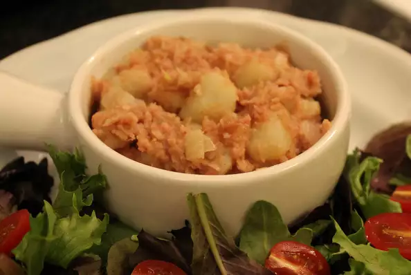

Stovies

Description
A Scottish dish of potatoes cooked with onions and corned beef. Often make with leftovers.
It's a whole meal in itself; simple and easy to make!
Ingredients
6 large baking potatoes, peeled and cubed
1 cup milk
1 tablespoon butter
1 large onion, roughly chopped
1 (12 ounce) can corned beef, cut into chunks
Steps
- In a saucepan, combine potatoes and milk. Bring to a boil, reduce heat,
and simmer until potatoes are tender, about 30 minutes.
- While potatoes are simmering, melt butter in a skillet over medium high heat.
Saute onions until soft and translucent.
- When potatoes are soft, mix in sauteed onions and corned beef. Cook an additional 10 minutes,
or until heated through. Season with salt and pepper.